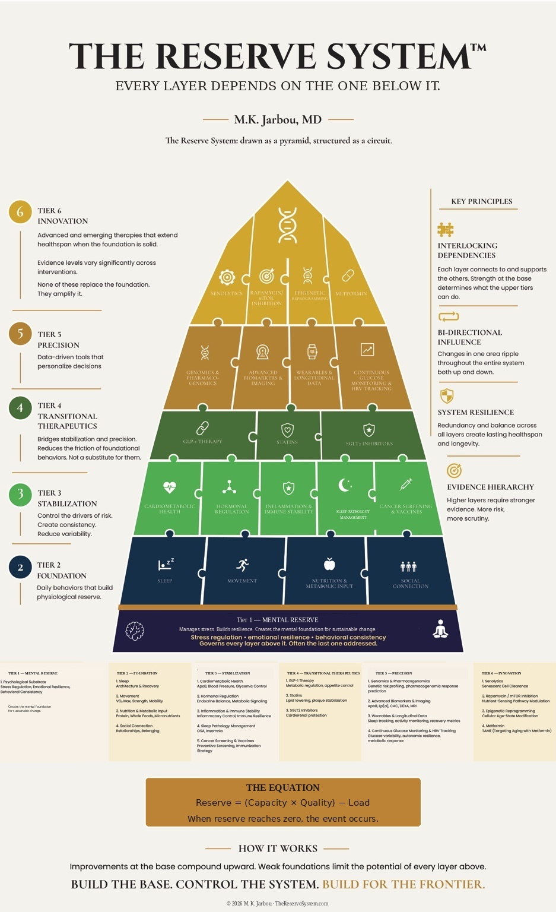
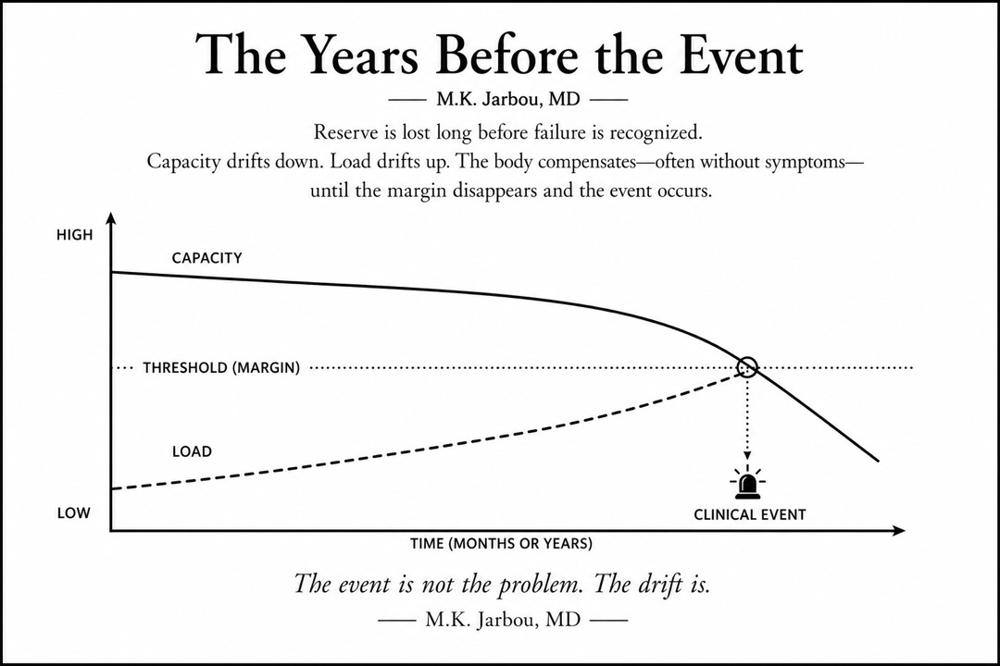

THE RESERVE SYSTEM
THE RESERVE SYSTEMI’m reading / I read the book
Get your Reserve Score and receive the chapters that match the layer most likely limiting capacity or increasing load.
Start the Reserve System ScoreBefore the Alarm · The Reserve System™
An ICU-informed physician’s framework for understanding capacity, load, and reserve before the alarm sounds.
Before the Alarm turns twenty years of ICU lessons into three moves: protect capacity, reduce load, rebuild reserve. The book creates trust. The Reserve System Score™ identifies the starting constraint. The clinic turns the framework into care.
Book launch funnel
The launch list is not a generic newsletter. It is the entry point for Chapter 1, The Reserve System Score™, and the email sequence that turns the framework from an idea into a next step.
The framework
In Chapter 2, The Reserve System™ is introduced as a pyramid to show dependency. Later in the book, it becomes a circuit model to show how the body behaves under load.

The core thesis
The ICU sees the alarm. The years before the alarm are where reserve is either protected, rebuilt, or quietly spent.
This is the bridge between the book and the clinic: find the layer where capacity is falling, reduce the load the body is carrying, and intervene before the margin disappears.

Start in the right place
The site does not treat every visitor the same. Readers need chapter direction. New leads need trust. Existing patients need language for the next clinical step.
Get your Reserve Score and receive the chapters that match the layer most likely limiting capacity or increasing load.
Start the Reserve System ScoreStart with Chapter 1 and understand why longevity is built before labs, medications, and protocols.
Send me Chapter 1 Already ready? Pre-order the book.Use The Reserve System™ to organize the next visit, clarify priorities, or refer someone whose story can still change.
Go to patient pathChapter 2 orientation model
Build the base, control the system, earn the apex.
In Chapter 2, The Reserve System™ is introduced as a pyramid to show dependency: Mental Reserve, Foundation, Stabilization, Transitional Therapeutics, Precision, and Innovation do not carry equal weight. Later in the book, the circuit model shows how the body behaves under load.
Stress regulation governs every layer above it.
Sleep, fitness, nutrition, and connection build the body’s margin.
Blood pressure, glucose, sleep apnea, hormones, inflammation, and screening stop quiet erosion.
Bridges stabilization and precision. Reduces the friction of foundational behaviors — not a substitute for them.
Data-driven testing that personalizes decisions and optimizes outcomes.
Advanced and emerging therapies that extend potential when the foundation is solid. They amplify the base — they never replace it.

Meet your physician
M. K. Jarbou, MD is trained in Internal Medicine, Pulmonary Medicine, Sleep Medicine, and Clinical Informatics. The Reserve System™ is not a wellness metaphor. It is the preventive translation of what he has watched bodies survive, and fail to survive, in critical care.
“I have spent twenty years in the intensive care unit, watching people arrive at the worst moment of their biological lives. What I have learned is this: the outcome was rarely determined by the ICU alone.”
More than two decades of ICU practice, and previously board certified in Critical Care Medicine.
The clinic application is deliberately sequenced: identify where reserve is being lost, reduce the load the body is carrying, then decide which advanced interventions have earned their place.
Clinical narratives
The patient stories in Before the Alarm are anonymized or composite clinical narratives. They are not testimonials. They are teaching cases drawn from patterns Dr. Jarbou has seen across twenty years of practice.
She walked the ICU hallway on day two with bacterial pneumonia in both lungs. The antibiotics mattered. So did the body they were working in: decades of walking, sleep, real food, muscle, and connection.
Daniel’s crisis looked sudden from the hallway. It was not sudden in the chart. Blood pressure, sleep apnea, and ApoB had been writing the story for years before the alarm sounded.
Jack’s standard lipid panel had been called acceptable for years. His ApoB told a different story: the difference between appearing monitored and actually understanding risk.
From framework to care
The clinical question is not “What else can we test?” It is “Which layer is forcing the rest of the system to compensate?”
A Reserve Review is the bridge from book to clinic: sleep, fitness, metabolic risk, blood pressure, inflammation, cardiometabolic markers, and precision testing are interpreted in sequence, not as disconnected data points.
The next step
The Reserve System Score™ is educational, not diagnostic. Answer as things actually are, and the result will point you to the chapters and clinical conversations that matter most now.